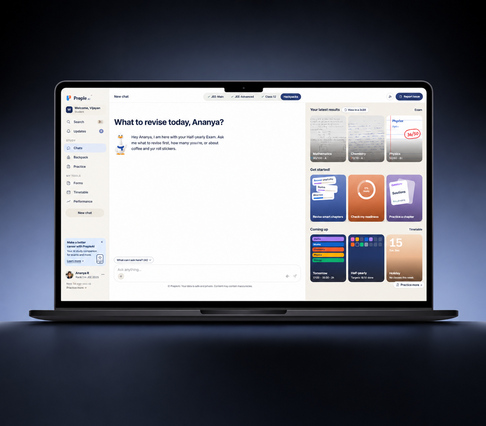
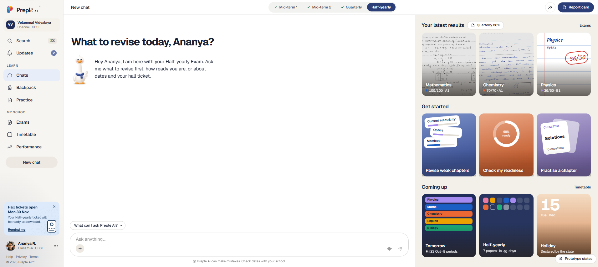

Ask, don't navigate
Conversation is the main way in. Menus are there for students who want them, not as a requirement.
Preple AI is a product I'm currently designing and building. This case study grows with the product, so screens and decisions shown here may change before launch.

Exam season is when students have the most information and the least clarity. Marks, answer sheets, timetables, and hall ticket dates all matter, but they live in different places. Preple AI brings them together around one simple question: what should I revise today?
A student picks the exam they're preparing for. Preple shows their latest results, points out weak chapters, checks how ready they are, and lines up what's coming next. When they're unsure, they just ask in plain language.
“Students shouldn't have to plan their revision. They should be able to ask, and get a clear next step.”
I'm the product designer behind Preple AI, shaping the experience from the first idea to working screens. I'm using AI throughout the process to speed up both design and development, so ideas can move from concept to a usable product quickly.
Turn scattered exam information into one calm workspace that a school student can understand at a glance and act on immediately.
The home screen had to answer several questions at once without feeling like a report card. Every element needed a clear reason to be there.
| Must Show | Why |
|---|---|
| Exam switcher | Everything depends on which exam the student is preparing for |
| Latest results by subject | Shows where the student actually stands |
| Weak chapters | The most useful place to spend revision time |
| Readiness check | Answers the question every student asks before an exam |
| Upcoming classes and exam countdown | Keeps revision tied to real dates |
| Hall ticket and holiday alerts | Important school updates that are easy to miss |
Before designing screens, I set four principles to guide every decision.
Conversation is the main way in. Menus are there for students who want them, not as a requirement.
Real marked answer sheets make results feel trustworthy and personal, not just numbers.
Focus on the exam that matters now and let everything else wait.
Exams are stressful. A warm tone and a friendly mascot make the product feel like a study buddy, not a grading system.
“This product needed to feel like a study partner, not a report card.”
The first thing a student sees is a direct question: “What to revise today?” Instead of choosing between sections, they can ask about what to revise first, how ready they are, or when their hall ticket is available. A suggested-questions prompt sits above the input for students who don't know where to start.
The fastest path to an answer is asking for it. Navigation should be a backup, not a gate.
Mid-term 1, Mid-term 2, Quarterly, and Half-yearly sit in a single segmented control at the top. Completed exams are ticked and the current one is highlighted, so students always know which exam the screen is about.
Each subject shows a photo of the student's actual marked answer sheet with the score and grade on top. Seeing their own handwriting and the teacher's marks makes results instantly recognisable, and it opens the door for the AI to explain exactly where marks were lost.
A score tells students how they did. The answer sheet shows them why.
Revise weak chapters, check my readiness, and practice a chapter. Each card has its own colour and a small visual preview, such as chapter progress bars or a readiness ring, so students can tell them apart without reading every word.
The “Coming up” row shows tomorrow's timetable, a countdown to the next exam with the number of papers, and upcoming holidays. Revision planning only works when it's anchored to the school calendar.
Important school updates, like when hall tickets open, appear as a single dismissible card in the sidebar with a “Remind me” action. Students get what they need to know without a crowded notification feed.
The best reminder appears once, at the right moment, and is easy to act on.
The home screen brings everything together: a chat-first workspace in the centre, results and quick actions on the right, and learning tools and school info in the sidebar.

One screen answers the three questions students ask most before an exam: how did I do, what should I revise, and what's coming up.
Put the product in front of real students during exam preparation and learn where they get stuck.
Make revision suggestions more personal using results, weak chapters, and the time left before each exam.
Build out the Backpack, Practice, and Performance areas into complete flows.
“The goal isn't more information for students. It's fewer decisions before an exam.”